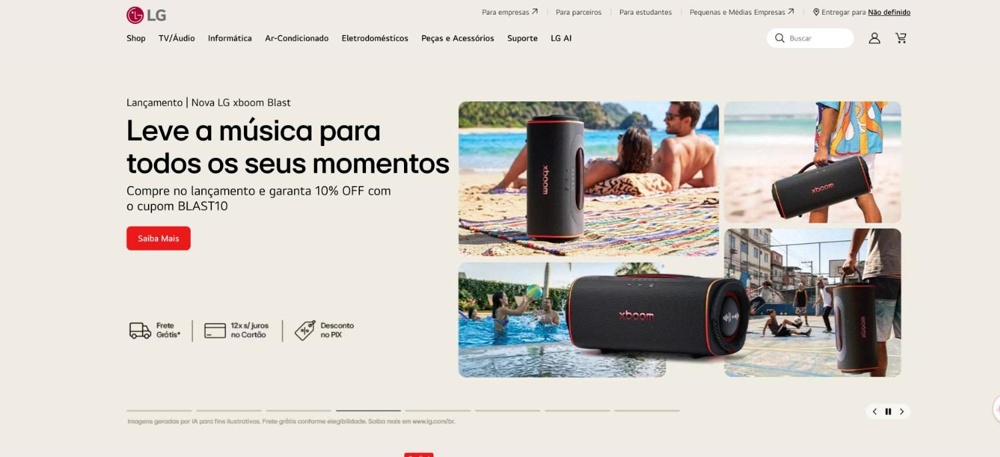

From a prototype I built without engineers to LG's official process for every product launch
How a launch dashboard prototype became LG's product information platform and its worldwide launch confirmation process.

Monthly launch confirmation, before and after
200+ separate Excel files, about 50 in Europe alone
1 shared dashboard on LG's product information platform
3,000+ product launches a month now go through one confirmation process.
- Role
- Prototype owner, then regional rollout
- Scope
- 3,000+ launches / month, ~70 countries
- Pilot
- European subsidiaries
- Built with
- AI low-code builder
 LG Electronics makes home appliances, TVs and IT products sold worldwide, with KRW 89 trillion (about USD 60B+) in 2025 revenue. Concentrix, a global customer-experience company with about 455,000 employees, runs LG’s global website management project; LG is one of its largest B2B clients.
LG Electronics makes home appliances, TVs and IT products sold worldwide, with KRW 89 trillion (about USD 60B+) in 2025 revenue. Concentrix, a global customer-experience company with about 455,000 employees, runs LG’s global website management project; LG is one of its largest B2B clients.
The situation and the challenge
Every month, each LG subsidiary confirmed which new products would launch in its country using their own in-country Excel files. In Europe alone that was around 50 completely separate product launch files in total. There was no single, universal view of all products being launched worldwide.
Who was involved
What I did
- Mar 2025Built the launch dashboard prototype without engineers
- PilotReplaced about 50 Excel files across European subsidiaries
- Jan–Jun 2026LG's development team built the full platform
- Jun 2026Launched internally as LG's official launch process
- Built the product launch dashboard prototype myself with an AI low-code builder and prompt-based development, iterating directly with the people who would use it, and defining how it should connect to Jira and Microsoft 365.
- Piloted it with the European subsidiaries, replacing about 50 Excel files with one shared view.
- Presented it on a company-wide call and to LG's development team.
- Handed it to LG engineering. LG's development team built the full product information platform from January to June 2026 and launched it internally in June 2026.
- Now, run the approved, finalized global launch dashboard rollout worldwide.
Key decisions
- Build a working prototype instead of writing a request for engineering.A request would have waited in a queue. A working tool showed the value directly and gave the development team a concrete spec.
- Pilot with Europe first.Europe is the largest region in LG's overseas sales organization, with the most subsidiaries and files, so it showed the problem most clearly and gave the strongest proof.
- Hand the build to LG's own engineers.A process for every launch worldwide has to live on LG's platform and be maintained by its team, not by one person's prototype.
Results
- Launch confirmation moved from Excel to LG's product information platform and became LG's official process for all launches worldwide.
- The prototype was cited on the client side as the proof of concept behind the platform overhaul.
- The prototype later grew into an AI-agent proof of concept for launch status.
What I took from it
The fastest way to get engineering time is to show something that works. A prototype turns a debate about priorities into a conversation about how to build it properly.